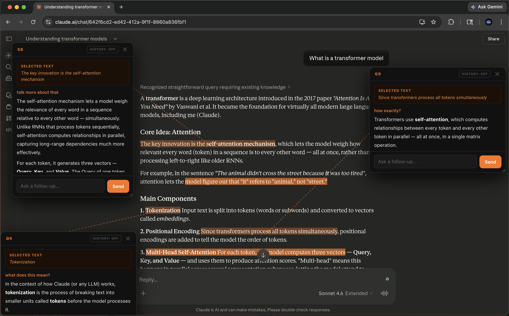

Select text in any Claude response.
Ask follow-ups in a floating overlay — anchored to your selection,
deleted the moment you dismiss.

Highlight any part of Claude's response. The extension watches for selections inside message blocks.
A floating orange button appears just below your selection. Click it — the selected text is highlighted and an overlay opens.
Type your question. interChat uses your existing Claude session to send a message and streams the response live, token by token.
Close the overlay. The conversation is immediately deleted from Claude's backend. Zero trace in your history.
Every design decision optimises for one thing: staying in flow while exploring complex ideas.
Each overlay is connected to its source text via a thread line. Stays anchored on scroll, hides when text leaves the viewport.
Open overlays on different parts of the page simultaneously. Each is completely independent with its own conversation.
Click the highlighted text to collapse an overlay to just its orange highlight. Click again to restore it exactly where you left it.
Toggle history mode to give Claude context from the current conversation tab. Or keep it off for pure focused follow-ups.
Drag the bottom-right corner to resize any overlay. Your layout, your preference.
Responses render fully — bold, italic, tables, code blocks, headings, lists. Claude's output looks exactly as intended.
No API keys. No backend. No build step. Pure browser APIs and Chrome's extension model.
A MAIN-world script monkey-patches window.fetch before React loads to extract the org ID — then bridges it to the isolated content script via postMessage. Chrome's security boundary, navigated correctly.
All requests are same-origin fetches from the isolated content script. The browser automatically attaches your Claude session cookies. No credentials stored anywhere.
Selected text is highlighted using CSS.highlights and new Highlight() — a bleeding-edge browser API that paints highlights without touching the DOM at all.
Every overlay lives in a closed Shadow DOM. Inline CSS (not a link tag) because async stylesheet loading caused transparent overlays. Claude's global styles can't leak in.
Thread lines are drawn on a shared SVG layer using live Range.getBoundingClientRect() calls on every scroll frame. When Claude's SPA detaches the layer, an isConnected guard re-attaches it.
Reads Claude's text/event-stream response using a ReadableStream reader. Accumulates and splits on \n\n, extracts delta tokens, appends live to the UI.
Works with your existing Claude account. No sign-up, no API key, nothing to configure.
Free · Open source · claude.ai only
No Chrome Web Store — load it directly in 60 seconds.